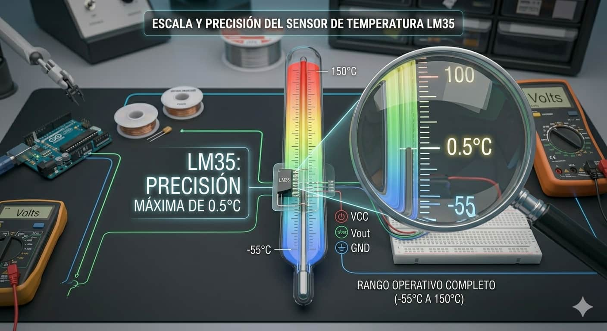
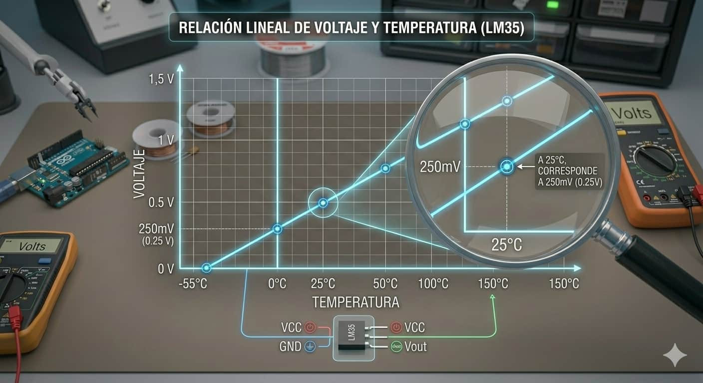
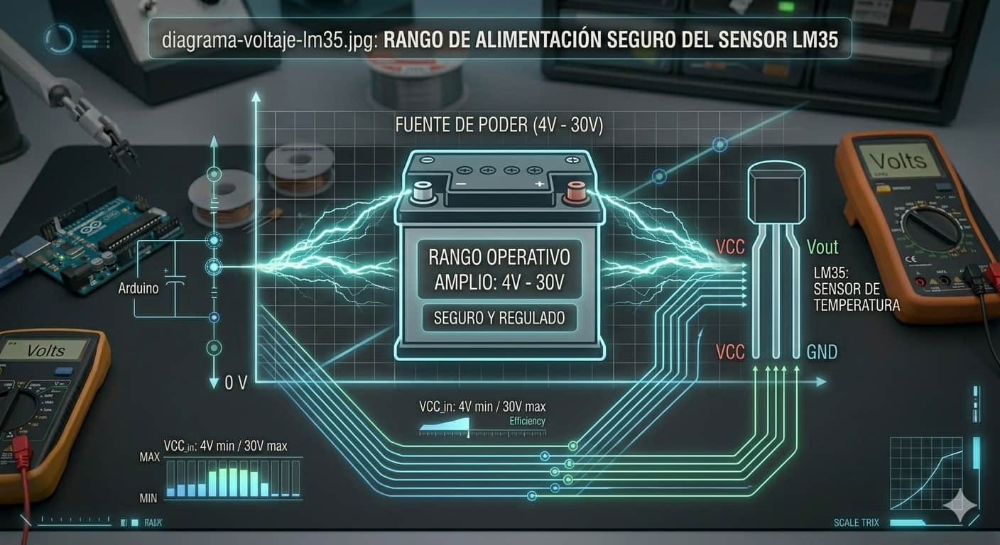
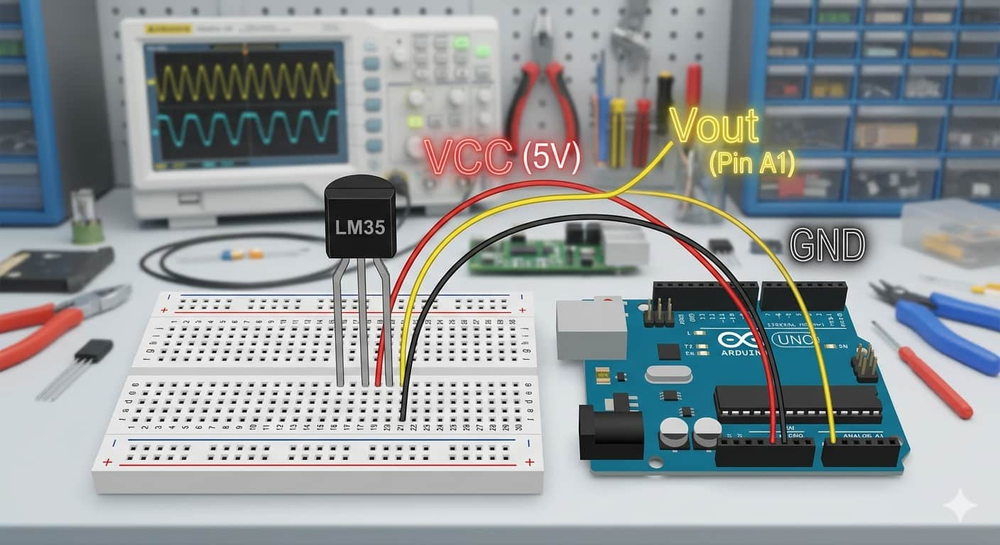

Rango y Precisión

Capaz de medir desde los -55°C hasta los 150°C, con un margen de error mínimo de apenas 0.5°C a temperatura ambiente.

El LM35 es un sensor de precisión que entrega una salida de voltaje proporcional a la temperatura en grados Celsius. Es la herramienta ideal para dotar a tus proyectos de la capacidad de monitorear el calor ambiental de forma exacta y sencilla.

Capaz de medir desde los -55°C hasta los 150°C, con un margen de error mínimo de apenas 0.5°C a temperatura ambiente.

Su funcionamiento es simple: por cada grado Celsius que detecta, el sensor aumenta su salida en 10mV. ¡Fácil de calcular!

Es muy versátil, ya que puede alimentarse con cualquier voltaje estable entre los 4V y los 30V.
Internamente, el LM35 es un circuito integrado que aprovecha la propiedad de los semiconductores, donde el voltaje varía de forma predecible con la temperatura. Analogía: Es como un termómetro de mercurio, pero en lugar de subir líquido, lo que sube es el voltaje eléctrico.
A diferencia de otros sensores, el LM35 se conecta directamente sin necesidad de resistencias externas, lo que simplifica mucho el cableado en la protoboard.

Mirando el sensor por su cara plana (donde tiene el nombre grabado), las patas se conectan así:
Utilizamos una fórmula matemática para convertir la lectura digital en grados Celsius reales:
float temp;
void setup() { Serial.begin(9600); }
void loop() {
temp = (analogRead(A1) * 500.0) / 1024.0;
Serial.println(temp); delay(1000);
}